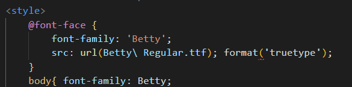

Fontes Externas
- As vezes o cliente pode pedir uma fonte que não tenha no Google Fonts ou seja bem específica, neste caso pode ser que ele te direcione a acessar o site DaFonte ao selecionarmos a fonte, devemos verificar se as mesmas possuem acentos e letras minusculas, pois algmas não possuem essas caracteristicas
- Baixamos o arquivo da fonte e inserimos dentro da nossa pasta index, e após o style já inserimos o @font-face Dentro da URl copiamos examente o nome no arquivo e abrimos um format para indicar o formato.Se for OTF colocamos opentype Se for TTF colocamos truetype Se for Apple Advanced Typography colocamos truetype-aat
- Cada navegador lê um tipo diferente, então se inserirmos uma fonta externa e ela tiver opções de otf e ttf, imortante colocarmos os dois configurados na pasta e no código.
